文档流
文档流是指 CSS 中引导元素排列和定位的一条看不见的“水流”。
CSS 的基石是 HTML，所以 HTML 默认的表现符合“流”，可以通过破坏“流”来实现特殊布局。
文档流的流向是可以改变的（column、display、float、position…），这种改变可以让 CSS 的展现更为丰富；因此，“文档流从左往右自上而下”这种说法是不严谨的。
流体布局指的是利用元素“流”的特性实现的各类布局效果；因为“流”本身具有自适应特性，所以“流体布局”往往都是具有自适应性的。
流动性是一种 margin/border/padding 和 content 自动分配水平空间的机制；如果手动设置宽度，就完全就不像“水流”那样完全利用容器空间，即所谓的流动性丢失。
块级元素
块级元素和 display:block 不是一个概念。例如，li 默认的 display 值是 list-item，table 默认的 display 值是 table，但是它们均是“块级元素”，因为它们都符合块级元素的基本特征；也就是一个水平流上只能单独显示一个元素，多个块级元素则换行显示。
由于“块级元素”具有换行特性，因此理论上它都可以配合 clear 属性来清除浮动带来的影响（IE 中的伪元素不支持 display:list-item；这是不用 display:list-item 清除浮动的主因，兼容性不好）。
内外盒子（臆想）
每个元素都两个盒子，外在盒子和内在盒子。外在盒子负责元素是可以一行显示，还是只能换行显示；内在盒子负责宽高、内容呈现什么的。
display:block 元素的盒子实际由外在的“块级盒子”和内在的“块级容器盒子”组成；display:inline-block 元素则由外在的“内联盒子”和内在的“块级容器盒子”组成；display:inline 元素则内外均是“内联盒子”。
替换元素
通过修改某个属性值呈现的内容就可以被替换的元素就称为替换元素；因此，img、object、video、iframe 或者 textarea 和 input 都是典型的替换元素：
- 内容可替换；
- 内容外观不受页面上 CSS 的影响（样式表现在 CSS 作用域之外）；
- 有自己的默认尺寸；
- 在很多 CSS 属性上有自己的一套表现规则（例如：vertical-align）；
- 伪元素的 content 属性生成的内容都是替换元素：
- 使用 content 生成的文本是无法选中、无法复制的，如同设置了 user-select:none 一般；
- content 动态生成的值无法获取；
- 不影响 :empty 选择器的使用。
使用 content 中的换行符，实现“加载中”动画。
| |
元素尺寸
- 元素偏移尺寸：offsetWidth/offsetHeight，元素的 border-box 尺寸；
- 元素可视尺寸：clientWidth/clientHeight，元素的 padding-box 尺寸；
- 元素外部尺寸：元素的 margin-box 尺寸，有可能为负数。
min/max-width 与 min/max-height
- min-* 的初始值是 none，max-* 的初始值是 auto；
- 如果 width > max-width，width 的值会被 max-width 的值覆盖（即使 width 的权重是 !important，因为 !important 只解决相同属性的优先级问题）；
- 如果 min-width > max-width，min-width 会覆盖 max-width 的值；
- 对于任意高度元素的展开收起动画，不妨试试 max-height（height:auto 不会触发过渡动画）。
margin
- margin 与 padding 百分比值无论是水平方向还是垂直方向都是相对于其 包含块 宽度计算的；
- 块级元素（不包括浮动和绝对定位元素）的上下外边距（margin-top/bottom）有时会合并为单个外边距；
- 第一个/最后一个子元素与父元素；
- 上下排列的兄弟元素；
- 空的块级元素。
- margin 的合并只发生在和当前文档流方向的相垂直的方向上（默认文档流是水平流，可用 writing-mode 改写）；
- 阻止 margin 合并的方法：触发 BFC、设置 border（border:0 不行）、设置 padding、设置 height。
line-height
- line-height 的定义就是两基线的间距，vertical-align 的默认值就是基线（字母 x 的下边缘线）;
- x-height 指的是小写字母 x 的高度，术语描述就是基线和等分线（midline，也称作中线）之间的距离；
- vertical-align:middle 跟上面的中线不是一个意思，middle 指的是基线往上 1/2 x-height 高度（字母 x 交叉点那个位置）；
- vertical-align:middle 并不是绝对的垂直居中对齐，我们平常看到的 middle 效果只是一种近似效果；
- ex 是 CSS 中的一个相对单位（相对于字体和字号），指的是小写字母 x 的高度；没错，就是指 x-height（1ch 表示一个阿拉伯数字 0 的宽度）。
默认空 div 高度是 0，一旦里面写上几个文字，div 高度就有了；不少人会认为 div 高度是由里面的文字撑开的，也就是 font-size 决定的；但本质上是由 line-height 全权决定的，尽管某些场景确实与 font-size 大小有关。
| |
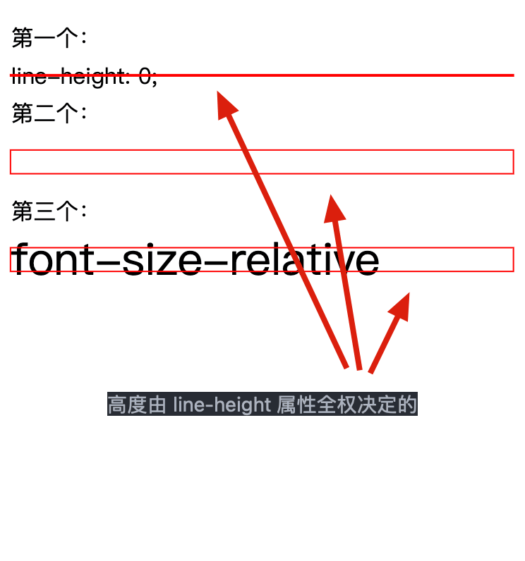
对于非替换元素的纯内联元素，其可视高度完全由 line-height 决定；注意这里的措辞“完全”，什么 padding、border 属性对可视高度是没有任何影响的。
对于文本这样的纯内联元素，line-height 就是高度计算的基石，用专业说法就是指定了用来计算行框盒子高度的基础高度。比方说，line-height 设为 16px，则一行文字高度是 16px，两行就是 32px，三行就是 48px；所有浏览器渲染解析都是这个值，1 像素都不差。
在 CSS 中，行距的上下等分机制（line-height=height 时可以实现近似垂直居中的效果），行距分散在文字的上方和下方（Adobe InDesign 的“行距”是加在文字上方的），行距=(line-height)-(font-size)。
line-height 的属性值：
- normal，和 font-family 相关联的一个变量，具体解析值还和系统、浏览器有关；
- 数值（1.5），解析值是和当前 font-size 相乘后的值，所有子元素继承的是 1.5 这个值；
- 百分比（150%），解析值是和当前 font-size 相乘后的值，所有子元素继承的是解析值；
- 长度值（21px），所有子元素继承的是解析值（21px）；
- 计算行高值时，所有浏览器都是向上取整的。
vertical-align
只能作用在 display 计算值为 inline、inline-block，inline-table 或 table-cell 的元素上；块级、浮动、绝对定位元素上无效。
vertical-align 的属性值分为以下几类：
- 线类：baseline（默认值，字符 x 的下边缘、替换元素的下边缘）、top、middle、bottom；
- 文本类：text-top（盒子顶部和父级内容区域的顶部对齐）、text-bottom（盒子底部和父级内容区域的底部对齐）；
- 上标下标类：sub（sub 元素默认的 vertical-align 属性值）、super（sup 元素默认的 vertical-align 属性值）；
- 数值百分比类：20px、20%（相对于 line-height 的解析值）：根据计算值的不同，相对于基线往上（正值）或往下（负值）偏移。
对于一个 inline-block 元素，如果里面没有内联元素，或者 overflow 不是 visible，则该元素的 baseline 就是其 margin 底边缘；否则其 baseline 就是元素里面最后一行内联元素的基线。
| |
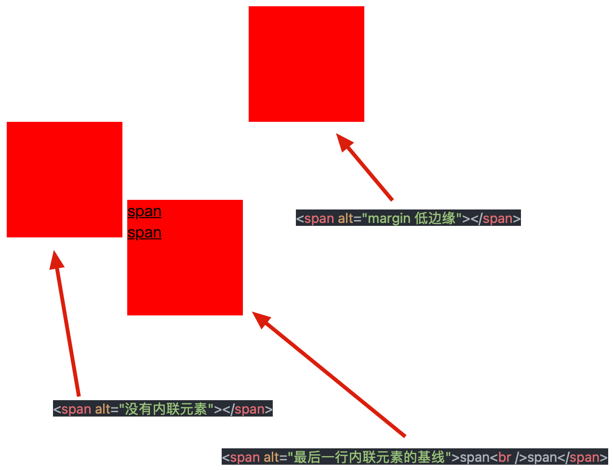
float
float 的特性：
- 块状化并格式化上下文，元素一旦 float 的属性值不为 none，则其 display 计算值就是 block 或者 table；
- 破坏文档流，使父元素高度塌陷（这是标准不是 bug，浮动本来就是为了破坏文档流实现文字环绕效果）；
- 没有任何 margin 合并。
| |
浮动锚点是 float 元素所在的“流”中的一个点，这个点本身并不浮动，就表现而言更像一个没有 margin、border 和 padding 的空的内联元素；浮动参考指的是浮动元素对齐参考的实体。在 CSS 世界中，float 元素的“浮动参考”是“行框盒子”，也就是 float 元素在当前“行框盒子”内定位；每一行内联元素都有一个“行框盒子”。
| |
因此，这里设置了 float:right 的 a 元素是相对于最后一行的“行框盒子”对齐的。
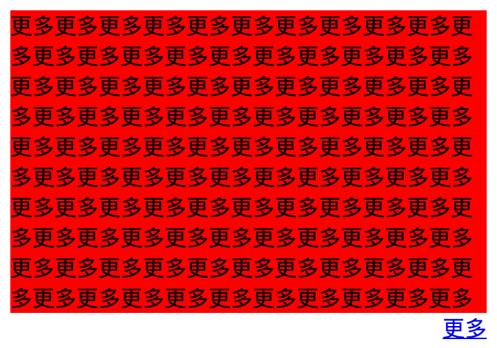
“浮动锚点”的作用就是产生“行框盒子”，因为“浮动锚点”表现如同一个空的内联元素，有内联元素自然就有“行框盒子”；于是，float 元素对齐的参考实体“行框盒子”对于块状元素也同样适用了，只不过这个“行框盒子”由于没有任何内容，所以无尺寸，看不见也摸不着罢了。
块级格式化上下文
如果一个元素具有 BFC，内部子元素再怎么翻江倒海，都不会影响外部的元素。所以，BFC 元素是不可能发生 margin 重叠的，因为 margin 重叠是会影响外面的元素的；BFC 元素也可以用来清除浮动的影响，因为如果不清除，子元素浮动则父元素高度塌陷，必然会影响后面元素布局和定位，这显然有违 BFC 元素的子元素不会影响外部元素的设定。
创建块级格式化上下文：
- 根元素，html；
- 浮动元素，float 不为 none，（left、right、inline-start、inline-end）；
- 绝对/固定定位元素，position 为 absolute/fixed；
- 匿名表格单元格元素，display 为 table、table-row、table-row-group、table-header-group、table-footer-group、inline-table；
- 表格单元格，display 为 table-cell；
- 表格标题，display 为 table-caption；
- 行内块元素，display 为 inline-block；
- 弹性元素，display 为 flex 或 inline-flex；
- 网格元素，display 为 grid 或 inline-grid；
- 多列容器，column-count 或 column-width 不为 auto；
- overflow 不为 visible 的块元素（hidden、scroll、auto、overlay）；
- display 为 flow-root 的元素；
- contain 为 layout、content 或 paint 的元素；
- column-span 为 all 的元素。
BFC 的结界特性最重要的用途其实不是去 margin 重叠或者是清除 float 影响，而是实现更健壮、更智能的自适应布局。普通流体元素在设置了 overflow:hidden 后，会自动填满容器中除了浮动元素以外的剩余空间，形成自适应布局效果，而且这种自适应布局要比纯流体自适应更加智能。
| |
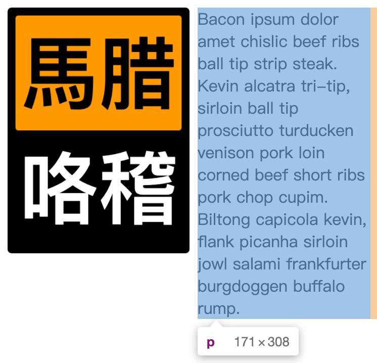
注意：
- clear:both 也能阻止浮动元素的父级塌陷，但不是触发了 BFC，而是在浮动元素最后放置了一个块级元素；
- border 也能阻止 margin 合并，但不是触发了 BFC，而是物理隔断两个 margin；
- 层级上下文不会创建 BFC；一个是三维的概念，而 BFC 是个二维的概念；
- 以下属性既可以创建层级上下文又可以创建 BFC：
- contain:paint；
- filter；
- perspective；
- position:fixed/sticky；
- transform。
overflow
overflow 原本的作用指定了块容器元素的内容溢出时是否需要裁剪，“BFC”只是其衍生出来的特性，“剪裁”才是其本职工作；当子元素内容超出容器宽度高度限制的时候，剪裁的边界是 border-box 的内边缘，而非 padding-box 的内边缘。
| |
对于 Webkit 浏览器，可以通过以下选择器修改滚动条样式：
- ::-webkit-scrollbar，整个滚动条；
- ::-webkit-scrollbar-button，滚动条上的按钮（上下箭头）；
- ::-webkit-scrollbar-thumb，滚动条上的滚动滑块；
- ::-webkit-scrollbar-track，滚动条轨道；
- ::-webkit-scrollbar-track-piece，滚动条没有滑块的轨道部分；
- ::-webkit-scrollbar-corner，当同时有垂直滚动条和水平滚动条时交汇的部分；
- ::-webkit-resizer，某些元素的 corner 部分的部分样式（例，textarea 的可拖动按钮）。
文本溢出省略：
| |
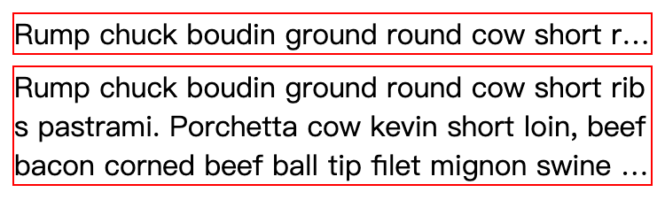
absolute
一个元素的尺寸和位置经常受其包含块（containing block）的影响（比如说，width:50%，那到底是哪个“元素”宽度的一半呢？注意，这里的这个“元素”实际上就是指的“包含块”）；大多数情况下，包含块就是这个元素最近的祖先块元素的内容区，确定一个元素的包含块的过程完全依赖于这个元素的 position 属性：
- 根元素（html）所在的包含块被称为初始包含块，他的尺寸是视口 viewport；
- 如果 position:static/relative/sticky，包含块由它的最近的祖先块元素（比如说，inline-block、block 或 list-item 元素）的内容区的边缘组成；
- 如果 position:absolute，包含块就是由它的最近的 position 不是 static（也就是值为 fixed、absolute、relative 或 sticky）的祖先元素的内边距区的边缘组成；
- 如果 position:fixed，包含块是视口 viewport。
没有设置 left/top/right/bottom 的绝对定位称为无依赖绝对定位；无依赖绝对定位本质上就是“相对定位”，仅仅是不占据 CSS 流的尺寸空间而已（一个不占据任何空间的相对定位元素）。一个无依赖绝对定位的元素，并且其祖先元素全部都是非定位元素，那么他的位置还是当前位置，不是在浏览器左上方；虽然说元素 position:absolute 后的 display 计算值都是块状的，但是其定位的位置和没有设置 position:absolute 时候的位置相关。absolute 是非常独立的 CSS 属性值，其样式和行为表现不依赖其他任何 CSS 属性就可以完成。
| |
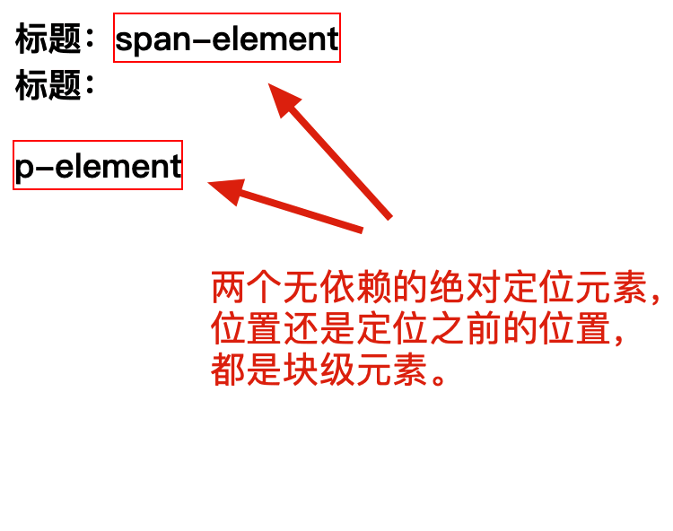
text-align 可以改变无依赖绝对定位元素的位置，原因是：
- div 内部，img 之前存在幽灵空白节点，受 text-align:center 影响而水平居中显示；
- 无依赖绝对定位的 img 本来的位置就应该在幽灵空白节点右边，而且不占空间。
| |
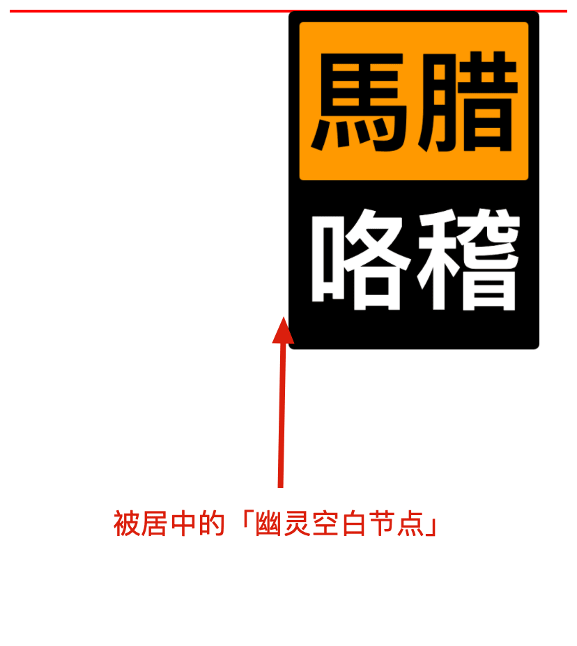
当 absolute 遇到 left/top/right/bottom 属性的时候，absolute 元素才真正变成绝对定位元素。
| |
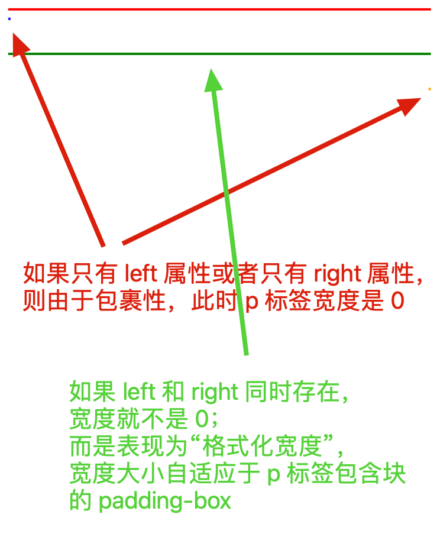
层叠规则
层叠上下文（stacking context），是 HTML 中的一个三维的概念；如果一个元素含有层叠上下文，我们可以理解为这个元素在 z 轴（垂直于显示器）上就“高人一等”。
层叠水平（stacking level），决定了同一个层叠上下文中元素在 z 轴上的显示顺序。
层叠顺序（stacking order），表示元素发生层叠时有着特定的垂直显示顺序。
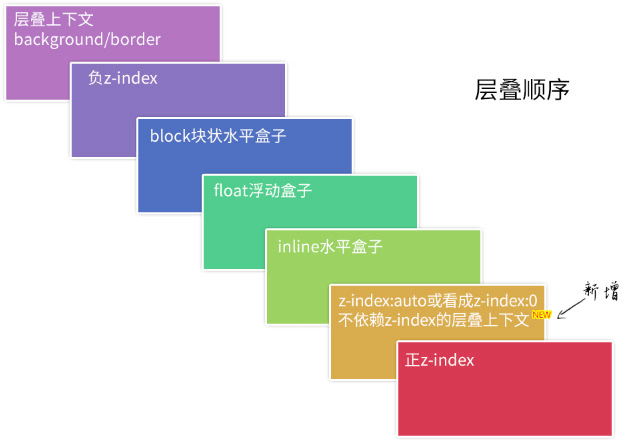
background/border 为装饰属性，浮动和块状元素一般用作布局，而内联元素都是内容。
当元素发生层叠的时候，其覆盖关系遵循下面两条准则：
- 谁大谁上，当具有明显的层叠水平标识的时候，如生效的 z-index 属性值，在同一个层叠上下文领域，层叠水平值大的那一个覆盖小的那一个；
- 后来居上，当元素的层叠水平一致、层叠顺序相同的时候，在 DOM 流中处于后面的元素会覆盖前面的元素。
层叠上下文元素有如下特性：
- 层叠上下文的层叠水平要比普通元素高；
- 层叠上下文可以阻断元素的混合模式；
- 层叠上下文可以嵌套，内部层叠上下文及其所有子元素均受制于“外部的层叠上下文”；
- 每个层叠上下文和兄弟元素独立，也就是说，当进行层叠变化或渲染的时候，只需要考虑后代元素；
- 每个层叠上下文是自成体系的，当元素发生层叠的时候，整个元素被认为是在父层叠上下文的层叠顺序中。
根层叠上下文指的是页面根元素，可以看成是 <html>元素。因此，页面中所有的元素一定处于至少一个“层叠结界”中。
对于 position:relative/absolute 以及 Firefox/IE 下含有 position:fixed 声明的定位元素，当其 z-index 值不是 auto 的时候，会创建层叠上下文。
| |
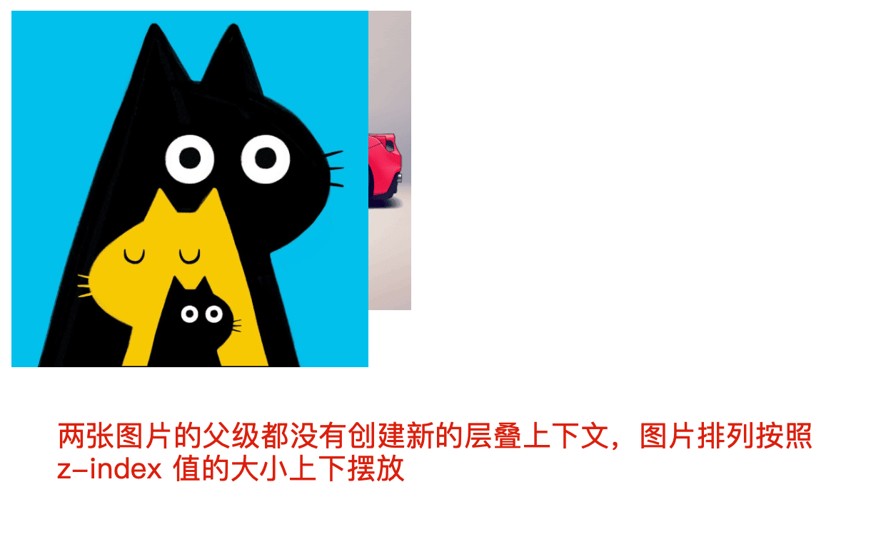
| |
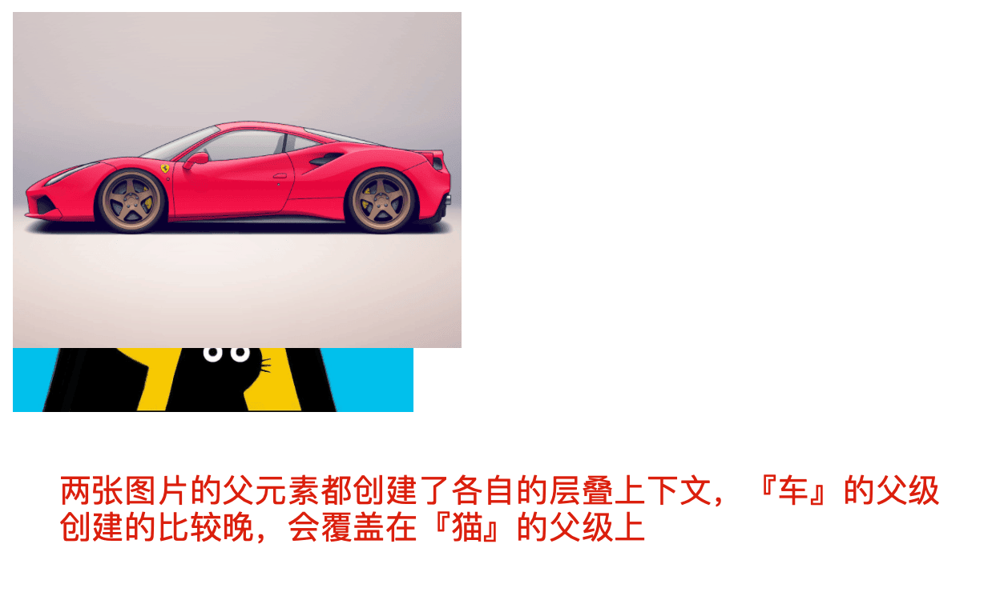
层叠上下文的创建：
- flex 布局元素（display:flex/inline-flex），同时 z-index 值不是 auto；
- 元素的 opacity 值不是 1；
- 元素的 transform 值不是 none；
- 元素的 mix-blend-mode 值不是 normal；
- 元素的 filter 值不是 none；
- 元素的 isolation 值是 isolate；
- 元素的 will-change 属性值为上面 2 ～ 6 的任意一个（如 will-change:opacity）；
- 元素的 -webkit-overflow-scrolling 值是 touch。
| |
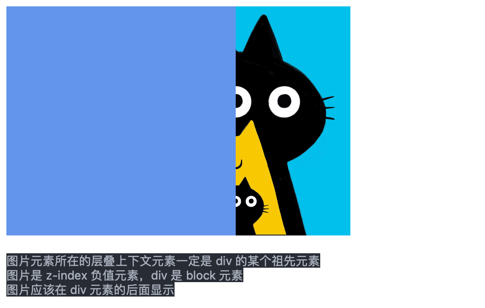
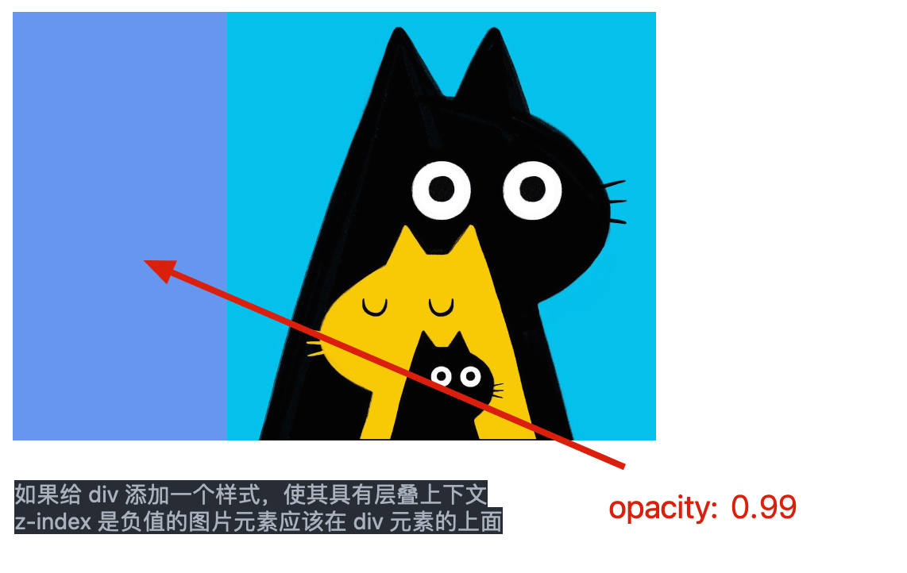
z-index 负值可以隐藏元素，只需要层叠上下文内的某一个父元素加个背景色就可以。它与 clip 隐藏相比的一个优势是，元素无须绝对定位，设置 position:relative 也可以隐藏；另一个优势是，它对原来的布局以及元素的行为没有任何影响，而 clip 隐藏会导致控件 focus 的焦点发生细微的变化，在特定条件下是有体验问题的。它的不足之处就是不具有普遍适用性，需要其他元素配合进行隐藏。
font
font-size 的关键字属性分为两类：
- 相对尺寸关键字：相对于当前元素计算：
- large：<big/> 元素的默认 font-size 属性值；
- small：<small/> 元素的默认 font-size 属性值。
- 绝对尺寸关键字：与当前元素 font-size 无关，仅仅受浏览器设置的字号影响：
- xx-large：和 <h1/> 元素的计算值一样；
- x-large：和 <h2/> 元素的计算值一样；
- large：和 <h3/> 元素的计算值近似（偏差在一个像素以内）；
- medium：font-size 的初始值，和 <h4/> 元素的计算值一样；
- small：和 <h5/> 元素的计算值近似；
- x-small：和 <h6/> 元素的计算值近似；
- xx-small：无对应的 HTML 元素。
由于浏览器限制，并不是所有小于 12px 的 font-size 都会被当作 12px 处理；有一个值例外，那就是 0，如果 font-size:0，那么文字会直接被隐藏掉，并且只能是 font-size:0，哪怕设置成 font-size:0.0000001px，都还是会被当作 12px 处理的。
font-family 默认值由操作系统和浏览器共同决定，例如 Windows 和 macOS 下的 Chrome 默认字体不一样，Windows 下的 Chrome 和 Firefox 默认字体也不一样；font-family 支持两类属性值，一类是“字体名”，一类是“字体族”。
| |
衬线字体，通俗讲就是笔画开始、结束的地方有额外装饰而且笔画的粗细会有所不同的字体。比如：宋体、Times New Roman、Georgia 等。无衬线字体没有这些额外的装饰，而且笔画的粗细差不多，比如：雅黑、Arial、Verdana、Tahoma、Helivetica 等。在大多数浏览器下，写在 serif 和 sans-serif 后面的所有字体都会被忽略。
所谓等宽字体，一般是针对英文字体而言的。东亚字体应该都是等宽的，就是每个字符在同等 font-size 下占据的宽度是一样的。但是英文字体就不一定了。
微软正黑体是一款全面支持 ClearType 技术的 TrueType 无衬线字体，用于繁体中文系统；对于微软雅黑和微软正黑，这两套字体都同时包含了比较完整的简体和繁体汉字，但这两套字形在正式场合是不能混淆使用的。
平常所说的“宋体”，指的都是“中易宋体”，英文名称 SimSun。macOS 内置的“宋体 - 简”和我们平常所说的“宋体”并不是同一个字体，其英文名称是“Songti SC”，字形表现也有差异。
font-weight 如果使用数值作为属性值，必须是 100-900 的整百数，没有 x50 这种东西；font-weight:400 等同于 font-weight:normal；font-weight:700 等同于 font-weight:bold。浏览器支持 100-900 的整百数，没有效果是因为系统缺乏对应粗细的字体。
| |
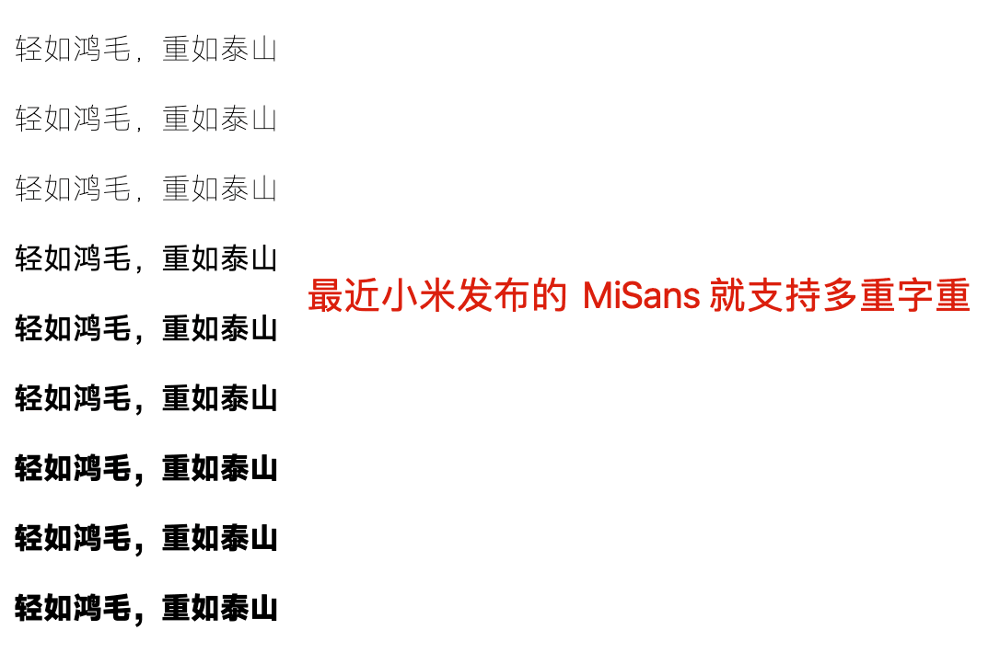
font-style 的三个属性值中 italic 和 oblique 这两个关键字都表示“斜体”的意思，差别在于：italic 是使用当前字体的斜体字体，而 oblique 只是单纯地让文字倾斜。如果当前字体没有对应的斜体字体，则退而求其次，解析为 oblique，也就是单纯形状倾斜。
让各个系统使用各自引以为傲的字体（让网页的字体跟系统走），三种声明都可以：
| |
凡是使用自定义字体的，差不多都是下面这种格式：
| |
text-indent
text-indent 可以在标签受限的情况下，实现特殊的布局效果：
| |
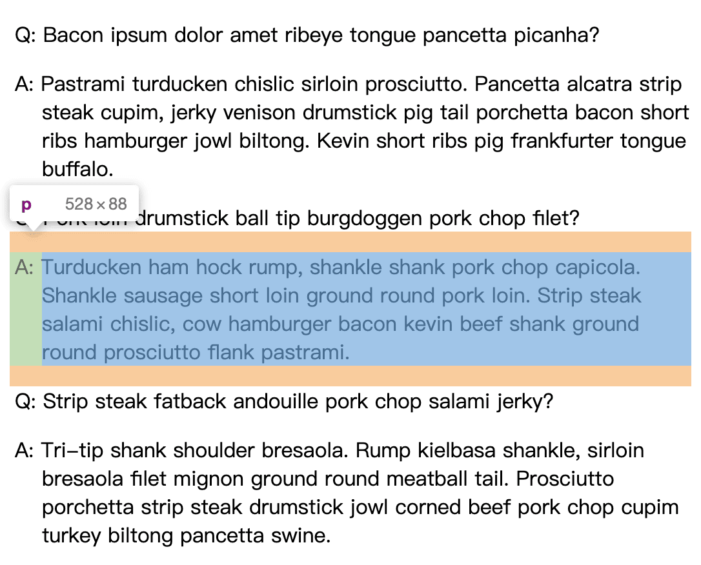
text-indent 应该注意几点：
- text-indent 仅对第一行内联盒子内容有效；
- 非替换元素以外的 display 计算值为 inline 的内联元素设置 text-indent 值无效；如果计算值是 inline-block/inline-table 则会生效。因此，如果父级块状元素设置了 text-indent 属性值，子 inline-block/inline-table 需要设置 text-indent:0 重置；
- <input/> 标签按钮 text-indent 值无效；
- <button/> 标签按钮 text-indent 值有效，但是存在兼容性差异，IE 理解为单标签，百分比值按照容器计算，而 Chrome/Firefox 标签内还有其他 ShadowDOM 元素，因此百分比值是按照自身的尺寸计算的；
- <input/> 和 <textarea/> 输入框的 text-indent 在低版本 IE 下有兼容问题。
letter-spacing
letter-spacing 具有一下特征：
- 继承性；
- 默认值是 normal 而不是 0，虽然说正常情况下，normal 的计算值就是 0，但在有些场景下，letter-spacing 会调整 normal 的计算值以实现更好的版面布局；
- 支持负值，且值足够大的时候，会让字符形成重叠，甚至反向排列（非 IE）；
- 和 text-indent 属性一样，无论值多大或多小，第一行一定会保留至少一个字符。在默认的左对齐情况下，无论值如何设置，第一个字符的位置一定是纹丝不动的；
- 支持小数值，即使 0.1px 也是支持的，但并不总能看到效果，这与屏幕的像素密度有关。对普通的桌面显示器，设备像素比是 1，最小渲染单位是 1px，因此，需要至少连续 10 个字符，才能看到 0.1px 产生的 1px 间距变化，如果是 9 个字符，则不会有效果，这很可能会让人误以为 letter-spacing 不支持非常小的数值，实际上是支持的；
- 暂不支持百分比值。
word-spacing
word-spacing 和 letter-spacing 名称类似，其特性也有很多共通之处：
- 都具有继承性；
- 默认值都是 normal 而不是 0；通常情况下，两者表现并无差异；
- 都支持负值，都可以让字符重叠，但是对于 inline-block 和 inline-table 元素却存在兼容性差异，Chrome 下可以重叠，IE/Firefox 下则再大的负值也不会重叠，因此不适合使用 word-spacing 来清除空白间隙；
- 都支持小数值，如 word-spacing:0.5px；
- 间隔算法都会受到 text-align:justify 两端对齐的影响；
- letter-spacing 作用于所有字符，word-spacing 仅作用于空格字符（即可以是键盘敲出来的空格 Space/Tab，也可以是换行符产生的空格）。
word-break:break-all 与 word-wrap:break-word
word-break 的属性如下：
- normal，使用默认的换行规则；
- break-all，允许任意非 CJK（Chinese/Japanese/Korean）文本间的单词断行；
- keep-all，CJK 只能在半角空格或连字符处换行；非 CJK 文本的行为实际上和 normal。
word-wrap 的属性如下：
- normal，正常的换行规则；
- break-word，一行单词中实在没有其他靠谱的换行点的时候换行。
| |
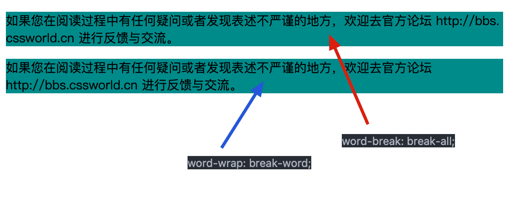
white-space
white-space 声明了如何处理元素内的空白字符，这类空白字符包括 Space、Enter、Tab 产生的空白。因此，white-space 可以决定图文内容是否在一行显示（回车空格是否生效），是否显示大段连续空白（空格是否生效）等。其属性值包括下面这些：
- normal，合并空白字符（多个空格变成一个）和换行符（多个连续换行合并成一个，并当作一个普通空格处理）；
- pre，不合并空白字符，内容只在有换行符的地方换行；
- nowrap，合并空白字符，但不允许文本环绕，元素的宽度此时表现为“最大可用宽度”，换行符和一些空格全部合并，文本一行显示；
- pre-wrap，不合并空白字符，内容只在有换行符的地方换行，允许文本环绕（一行文字内容超出容器宽度时，会自动从下一行开始显示）；
- pre-line，合并空白字符，内容只在有换行符的地方换行，允许文本环绕。
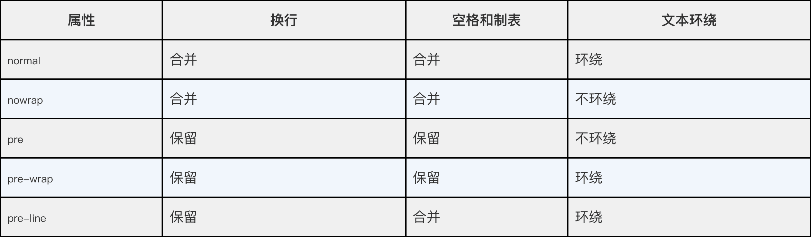
text-align:justify
在默认设置下，text-align:justify 要想有两端对齐的效果，需要满足两点：
- 有分隔点，如空格；
- 要超过一行，不足一行，不会两端对齐；
- text-align-last:justify，兼容性不是很好（Safari/IE）。
| |
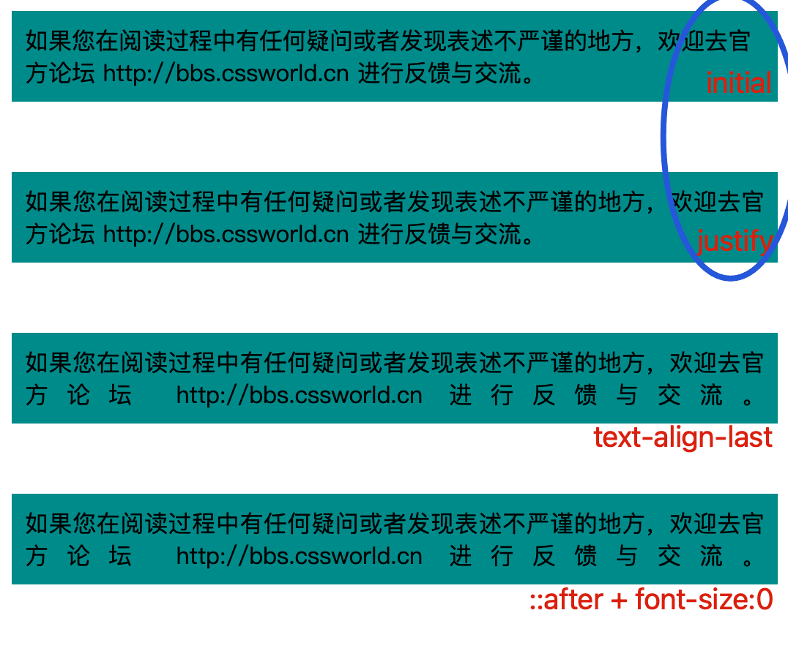
::first-letter 与 ::first-line
::first-letter/::first-line 生效的前提：
- 不是所有的字符都能单独作为 ::first-letter 伪元素存在的；常见的标点符号、各类括号和引号都不行（::first-line 不适用）；
- 可以作为 ::first-letter 伪元素的字符：数字、字母、中文、$、运算符、空格等（::first-line 不适用）；
- 元素的 display 计算值必须是：block、inline-block、list-item、table-cell、table-caption；
- ::first-letter 伪元素是作为子元素存在的，或者说应当被看作是子元素，CSS 权重更高；
- 应用在 ::first-letter 伪元素上的 CSS 只有一部分规则有效。
display、opacity、visibility

HTML 中有很多标签和属性天然 display:none，如 <style/>、<script/>、<dialog/>、[type=“hidden”] 元素。如果这些标签在 <body/> 元素中，设置 display:block 是可以让内联 CSS 和 JS 代码直接在页面中显示的。
| |
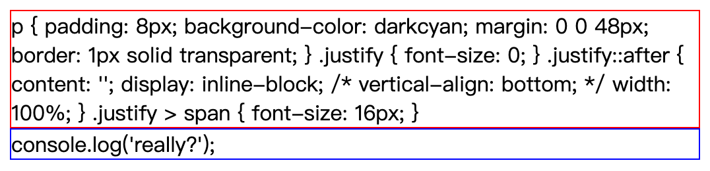
cursor
cursor:none 可以隐藏用户鼠标光标，全屏看视频时，可以判断用户行为，自动隐藏鼠标。
cursor:context-menu 适用于自定义上下文菜单的情形，例如，邮箱、网盘等。
cursor:default 常搭配 user-select:none 属性使用，表示当前内容不可选。
cursor:cell 可以让光标变为 Excel 里的样式。
direction
direction 设计的本意是为了兼顾阿拉伯语、希伯来语等从右往左的语言，他有两个属性值：
- ltr，默认值，从左往右；
- rtl，从右往左。
direction 可以轻易的改变元素的水平呈现顺序；例如，桌面弹窗的确认按钮在左，移动端弹窗的确认按钮在右，就可以简单的通过媒体查询实现。